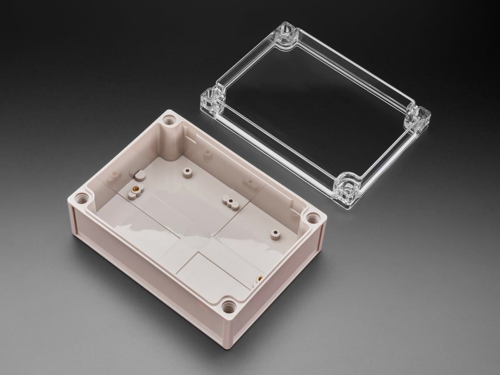
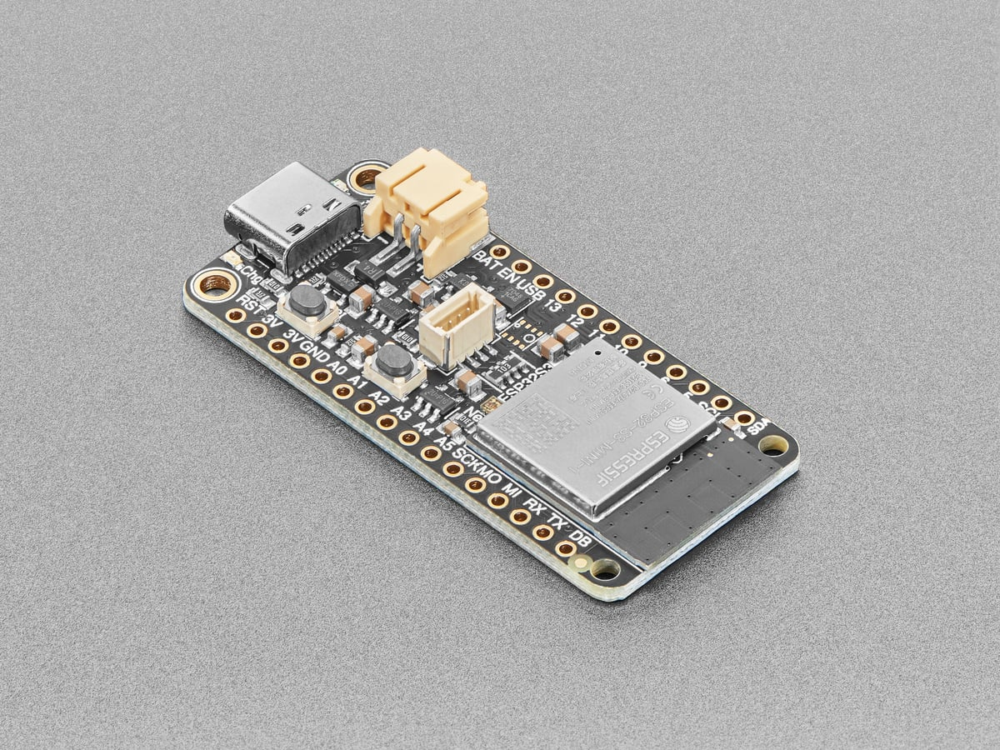
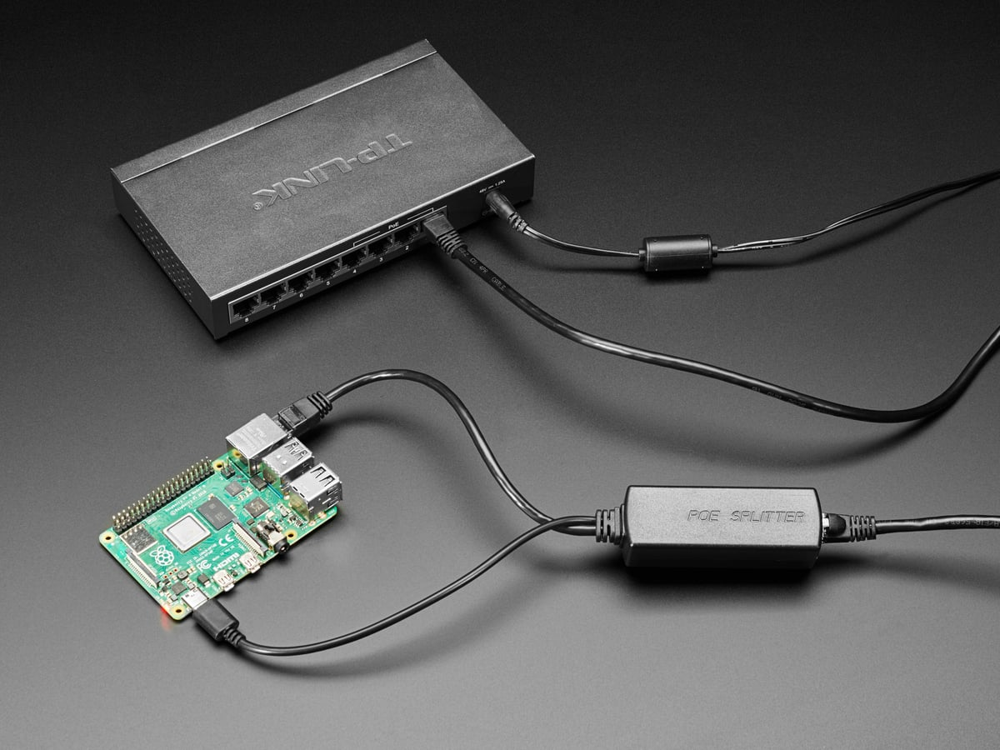
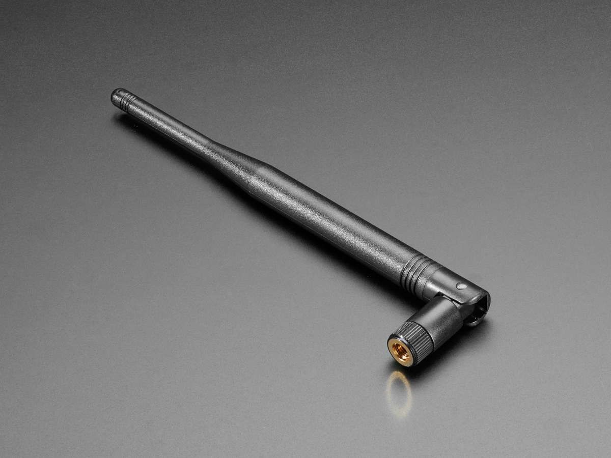
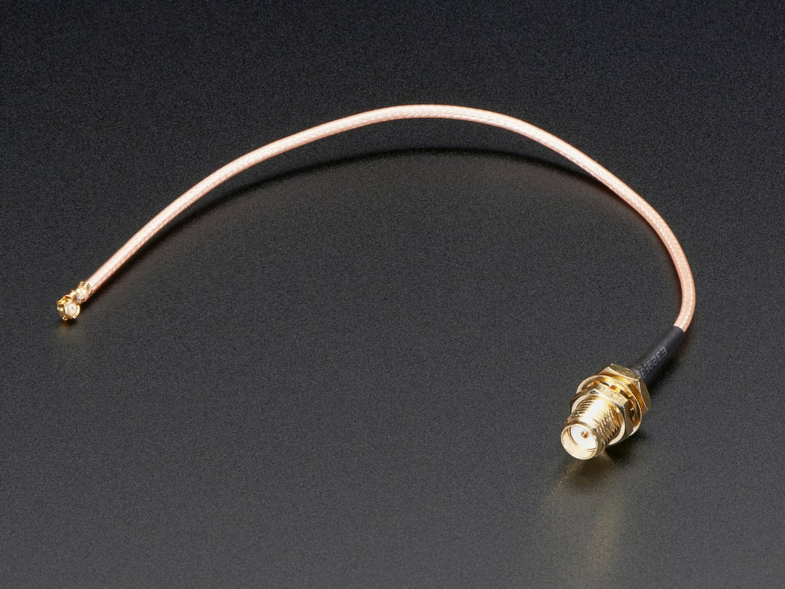
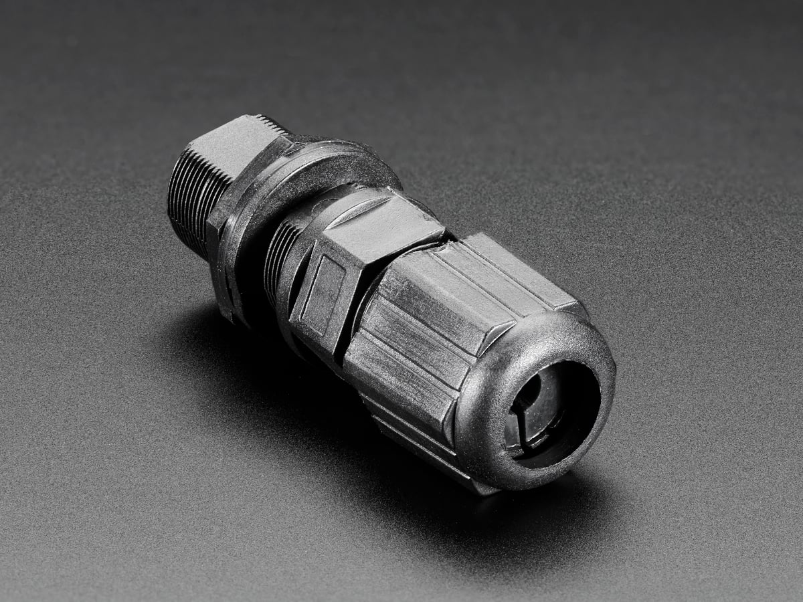
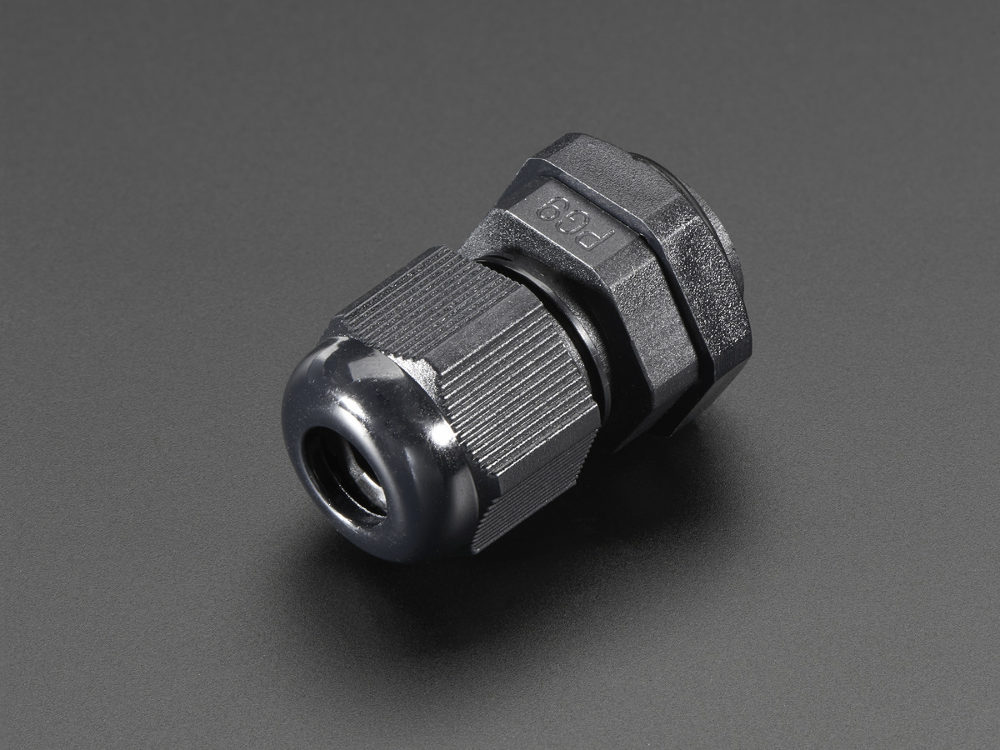

Home / ESP32 Receivers / ESP32 Site Receiver Module
Detection Electronics · ESP32 · Permanent kit
ESP32 Site Receiver Module
$179 / $249 Hardware Only / Ready-to-Run
Ready-to-Run
$249
Same hardware. We load the receiver image before it ships.
Extra business day. Ships from us after we load it.
- Large IP66 box, clear lid — buyer drills gland holes
- PoE brick is 5 V USB-C power only. The board has no Ethernet
- w.FL antenna chain + RP-SMA 2.4 GHz duck. Board connector is w.FL, not SMA
- USB-C. No LiPo. Hardware Only or Ready-to-Run
Hardware Only ships from US shops after payment. Ready-to-Run ships from us after we load the image. Sold by Dark Sky Systems LLC. Card via Stripe.